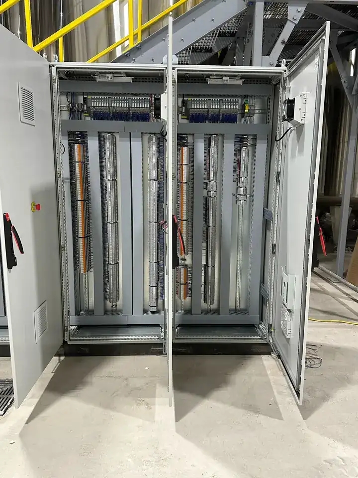

Medio ambiente
Plantación de árboles y espacios verdes
Campañas de plantación alrededor de nuestras instalaciones y con comunidades locales, con seguimiento año tras año.
Nosotros · Confianza y responsabilidad
La seguridad de procesos, validación, ciberseguridad, confidencialidad y autoridad de ingeniería no son lemas. Cada proyecto necesita alcance definido, responsables, controles documentados y evidencia adecuada a su uso.

Nuestros compromisos
Determine la jurisdicción, revisión profesional, códigos aplicables y requisitos de aprobación al inicio de cada contrato.
Asigne las responsabilidades de seguridad de diseño y sitio, salvaguardas operativas, elementos para revisión de peligros y puntos de escalamiento.
Acuerde URS y las bases del proyecto, alcance FAT/SAT, revisiones documentales y evidencia requerida para aceptación o calificación del cliente.
Defina acceso, redes, segmentación, credenciales, soporte remoto y aprobaciones de seguridad con los responsables IT/OT del cliente.
Acuerde quién puede recibir planos, datos, fotografías y registros técnicos, y utilice controles contractuales de confidencialidad cuando sea necesario.
Responda a solicitudes de información de entidad, seguros, competencias y registros de aseguramiento de proyectos mediante un proceso de verificación apropiado.
Las certificaciones, licencias y aprobaciones regulatorias se confirman para cada proyecto; se proporciona evidencia específica del proyecto para revisión.
Debida diligencia
La aprobación de ingeniería y los requisitos de equipos a presión, eléctricos y de instalación dependen del proyecto y su ubicación.
FAT, pruebas en sitio, puesta en marcha y límites de validación se vinculan con un alcance acordado y las normas aplicables.
Los requisitos escritos, especificaciones, planos, pruebas y registros de responsabilidades se revisan conforme a las obligaciones del proyecto.
Las credenciales de la empresa, documentación de proyectos, certificaciones e información regulatoria están disponibles a solicitud, sujetas a aplicabilidad, verificación y confidencialidad.
Ingeniería responsable
La sostenibilidad comienza con un proceso que se puede comprender, medir y mejorar.
Evalúe las oportunidades de proceso para recuperación de solventes, servicios auxiliares y reutilización de materiales, medidas según los requisitos específicos del proyecto.
Establezca mediciones confiables, el contexto de los estados de los equipos y líneas base operativas antes de recomendar cambios de eficiencia.
Considere acceso para mantenimiento, documentación, refacciones y puesta en marcha para que los equipos nuevos puedan operarse y mantenerse.
Aclare las responsabilidades de SSMA, interfaces con contratistas, regulaciones locales y decisiones que requieren especialistas independientes.
Comunidad y responsabilidad social corporativa
Nuestros programas de responsabilidad social corporativa se enfocan en el medio ambiente, la educación y las comunidades cercanas a nuestras oficinas.
Campañas de plantación alrededor de nuestras instalaciones y con comunidades locales, con seguimiento año tras año.
Apoyo a la escolarización infantil: materiales educativos, colegiaturas y becas para los niños que más lo necesitan.
Prácticas profesionales, proyectos de último año, visitas a plantas y conferencias de invitados que conectan a estudiantes de ingeniería con sistemas reales.
Prácticas profesionales y mentoría que ayudan a estudiantes de ingeniería a iniciar carreras en ingeniería de procesos y automatización.
Separación de residuos, ahorro de energía y agua, y talleres seguros y organizados en nuestras instalaciones.
Donación de sangre y jornadas de salud, con la participación voluntaria de nuestros empleados.
Crezcamos juntos
Para calificación de proveedores, credenciales de la empresa o documentación de proyectos, contacte a nuestro equipo.